Black and gold is one of the more reliable color pairings in interior design, and a gallery wall is one of the best places to put it to work.
Black brings the drama and the anchor.
Gold brings the glow.
Together they read as sophisticated rather than themed.
The combination also plays well with almost any existing style, minimalist, vintage, boho, modern glam, which makes it an easier gallery wall to commit to than most.
Getting it right genuinely comes down to a handful of deliberate choices: frames, art, layout, lighting, and a little restraint along the way.
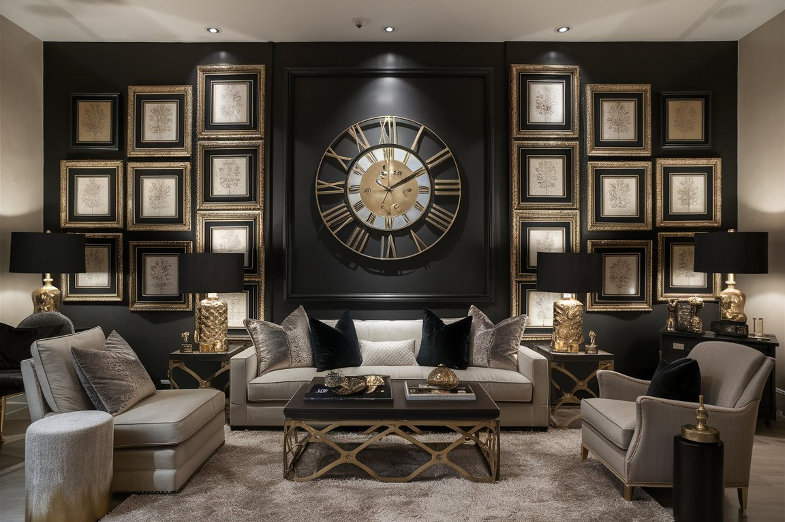
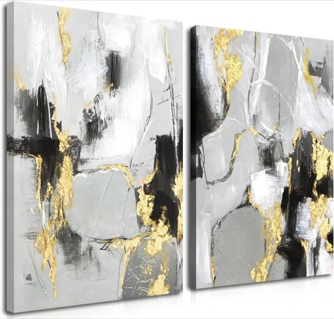
Framed Abstract Black Gold Wall Art Set of 2, Modern Black White Gold Canvas Prints
Shop on AmazonIs This Look Right for Your Room?
Black and gold leans bold by nature, so it is worth considering your room's existing palette before committing a full wall to it.
A room that already has some darker tones, warm metals, or a bit of glam in its furniture will take to this combination immediately.
A lighter, more neutral room can still pull it off.
The shelf option or a smaller cluster is often the easier entry point in that case, since it tests the look without the full commitment of a permanent wall arrangement.
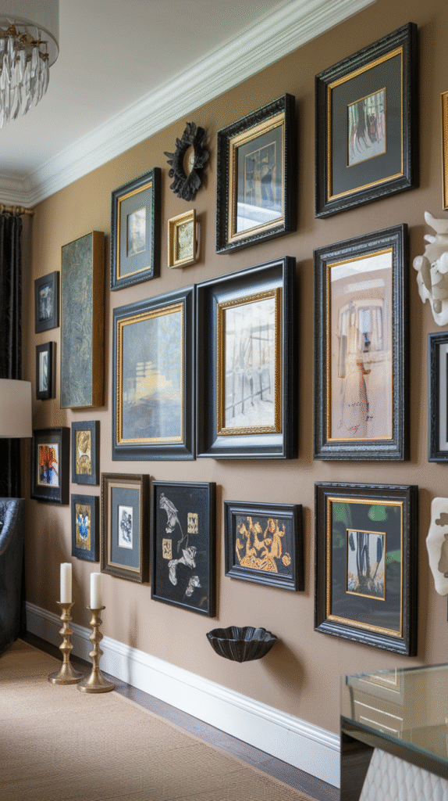
Add the Final Touches That Tie It Together
Once your art, frames, and layout are settled, a few small details make the whole wall read as finished.
Sticking to a limited palette, black, gold, white, maybe a touch of beige or green, keeps it from feeling scattered, and Command strips make the whole setup renter-friendly if you are not drilling into the wall permanently.
Keeping the wall itself clean matters more than it sounds like it would, since dust and fingerprints show up quickly against black frames.
Rotating in new prints every few months is also an easy way to keep the wall feeling current without redoing the whole thing.
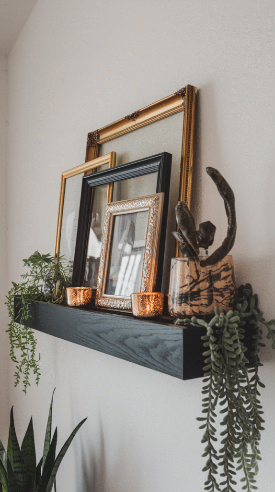
Try the Low-Commitment Shelf Option
If you are drawn to the look but not ready to commit to a wall full of nail holes, a picture ledge solves that.
A black or gold floating shelf delivers most of the same visual energy, minus the permanence.
Frames can be rearranged any time without patching anything, layered for a slightly more casual feel, and paired with a candle, a small plant, or a miniature sculpture for extra texture.
It is a flexible middle ground between a fully committed gallery wall and a single piece of art.
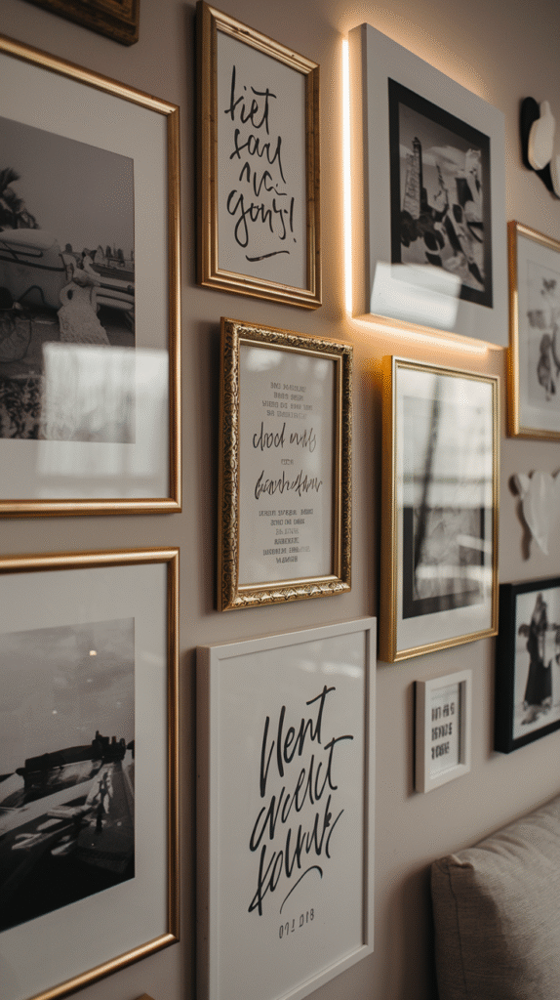
Make It Personal
A gallery wall feels more like home once a few personal pieces are mixed in, without going overboard on framed family photos.
A black-and-white photo from a meaningful trip, a wedding invitation printed with gold foil, a handwritten quote from someone close, or a child's artwork scanned and reprinted in black and white all fit the palette while still feeling personal.
Balance is the key here.
A few personal touches add warmth, but too many start to feel more like a timeline than a styled wall.
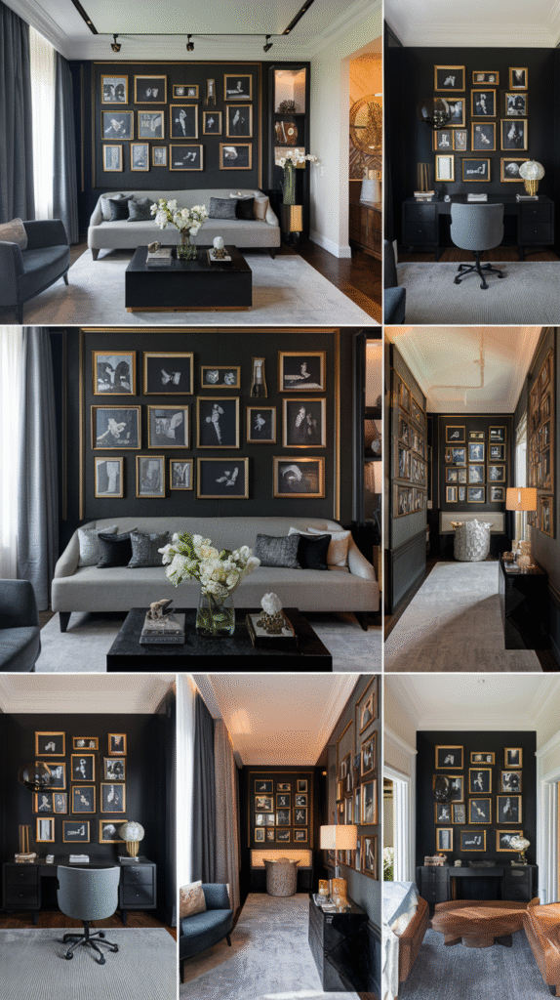
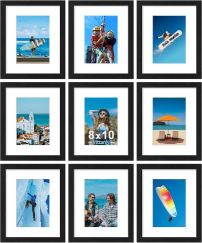
Vittanly 8x10 Picture Frames Set of 9 for Wall or Tabletop Display, Black
Shop on Amazon
Know Where It Works Best
A black and gold gallery wall suits more rooms than it might seem at first.
Behind the sofa in a living room creates an instant focal point, over the headboard or facing the bed works well in a bedroom, and an entryway benefits from the strong first impression it creates the moment someone walks in.
A home office or a hallway both work too, and a full wall is not actually required.
A smaller cluster above a console table or tucked into a nook can carry just as much visual weight as a larger one.
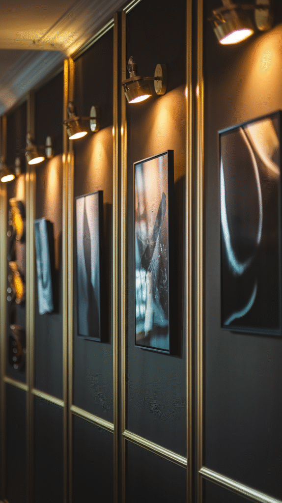
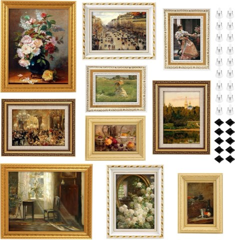
10-Pack Gold Vintage Picture Frames Set, Antique Gallery Wall Frame Set
Shop on AmazonLight It Properly
Lighting is the most overlooked part of any gallery wall, and it matters even more with black and gold, since the contrast is what gives the look its impact.
Picture lights mounted above individual frames add instant polish, wall sconces on either side of the arrangement bring a more luxe glow, and LED strip lighting offers a subtler, modern option that is fairly easy to install.
Whichever option you use, a warm light temperature matters more than you would expect.
A cold, overly blue light washes out the gold tones instead of highlighting them.
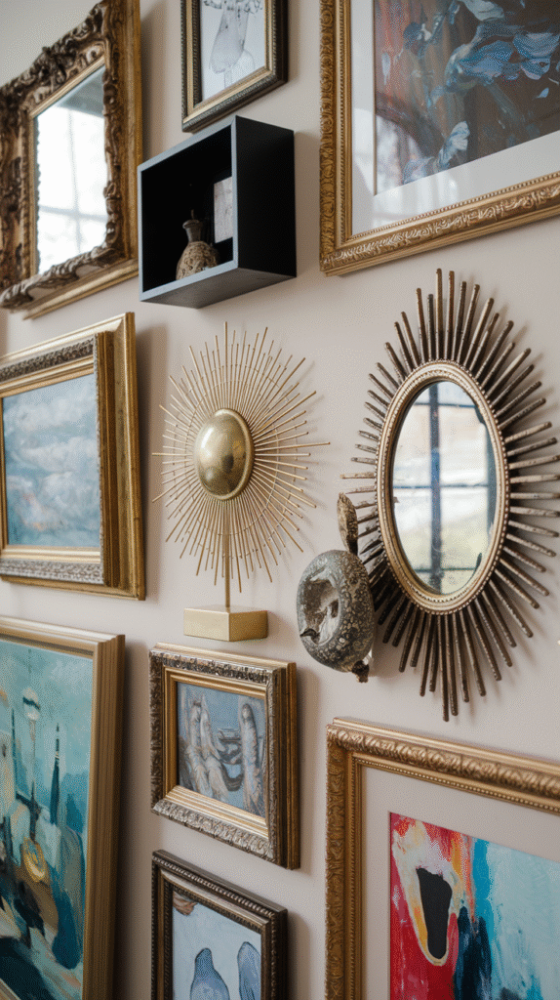

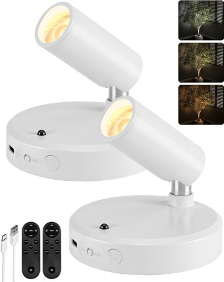
EZVALO Spot Lights Indoor, Rechargeable Picture Lights with Remote, 2-Pack
Shop on AmazonAdd a Few Sculptural Elements
A gallery wall does not have to be flat art alone.
Brass or gold wall sculptures, sunbursts, metal leaves, abstract shapes, bring dimension into the mix, and black shadow boxes work well for displaying small objects, dried flowers, or miniature sculptures.
A mirror with a gold trim adds sparkle and bounces light back into the room at the same time.
Combining flat art with a few dimensional pieces keeps the whole wall feeling more like a curated display than a flat print collection.
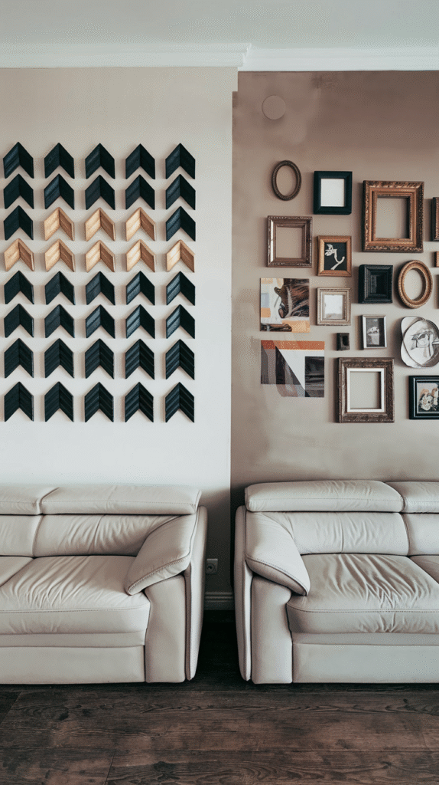
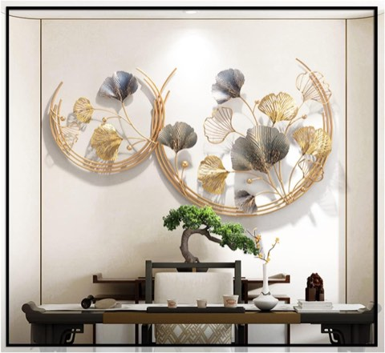
CDDUOLA 3D Room Wall Decor, Metal Round Golden Ginkgo Leaf Sculpture, 2 Pack
Shop on AmazonChoose a Layout
There are really two directions to take the layout: a classic grid, or a more eclectic cluster.
A grid suits a formal living room or entryway especially well.
Even spacing, around 2 to 3 inches between frames, and matching frame sizes throughout, give it a buttoned-up, uniform look.
An eclectic cluster is more relaxed and considerably more forgiving.
Combining different sizes and orientations, starting from one central piece and building outward, and keeping spacing fairly consistent, roughly 2 inches, keeps the arrangement feeling intentional rather than messy.
Either way, cutting paper templates of each frame and taping them to the wall first saves a lot of unnecessary nail holes.
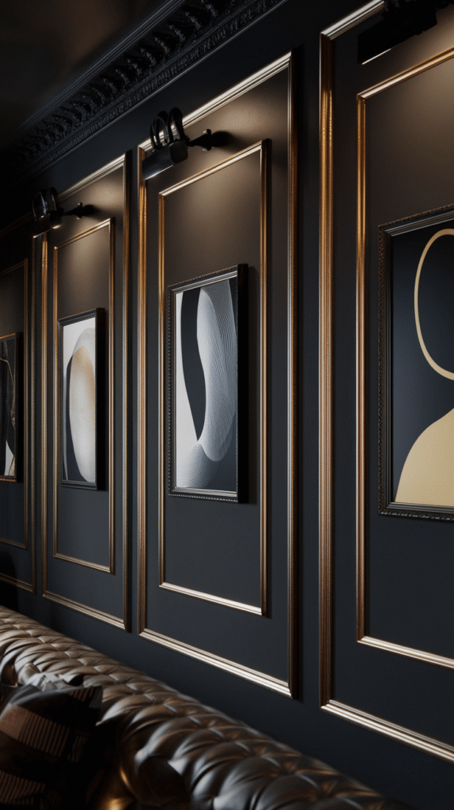
Picture Hanging Kit, Picture Frame Hanger Tool with Level Measuring Ruler
Shop on AmazonChoose the Art
A gallery wall does not require an art collection to pull off.
It works just as well filled with accessible, affordable pieces.
Abstract prints with black brushstrokes on white paper, gold foil typography, black-and-white photography, and simple line art all fit the palette without much hunting.
Mixing mediums tends to look more intentional than sticking to one type throughout.
Pairing a bold gold-leaf piece with a delicate sketch or a moody photograph creates real depth, and that contrast is usually what makes a gallery wall look curated instead of random.
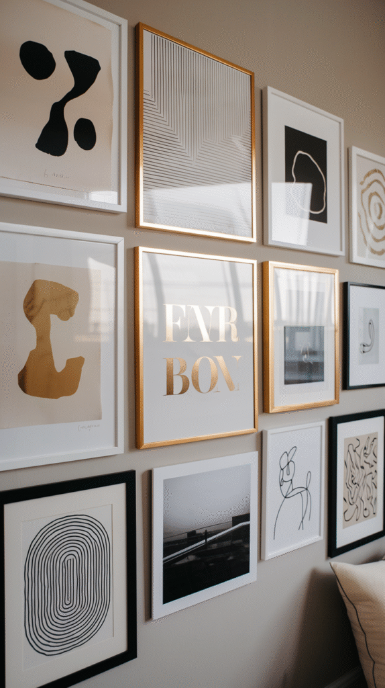
Framed Dream and Achieve Black and Gold Foil Typography Canvas
Shop on AmazonStart With the Right Frames
Not every frame works for this look, and mismatched leftovers from a closet rarely read as intentional.
Matte black frames keep things sleek and let the art do the talking, while brushed or antique gold frames add character without trying too hard.
A slightly distressed finish often looks better than a brand-new one.
Mixing sizes, thicknesses, and finishes is completely fine, as long as everything stays within the black-and-gold palette.
Matching mats in white or off-white also help tie varied frames together into one cohesive wall, even when the frames themselves do not match.
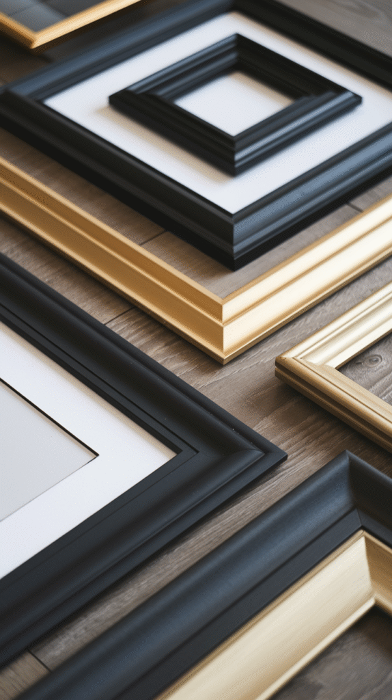

The Formula That Makes It Work
A black and gold gallery wall rewards a little planning more than most décor projects do, but none of the individual steps are complicated on their own.
Frames, art, layout, and lighting each do their part, and the palette itself does most of the heavy lifting.
Whether it ends up spanning a full wall behind the sofa or living more modestly on a small picture ledge, the same core formula, a tight palette, varied textures, and warm lighting, is what consistently makes the look feel sophisticated rather than themed.